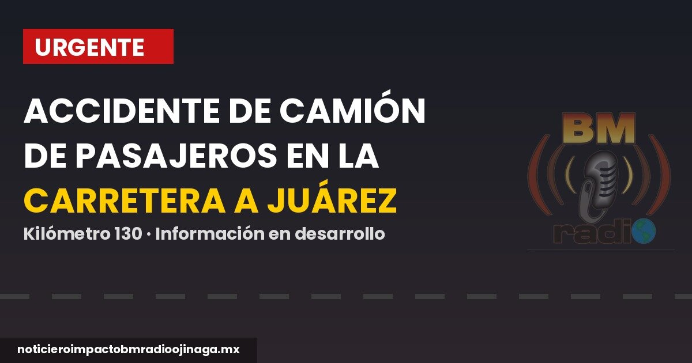
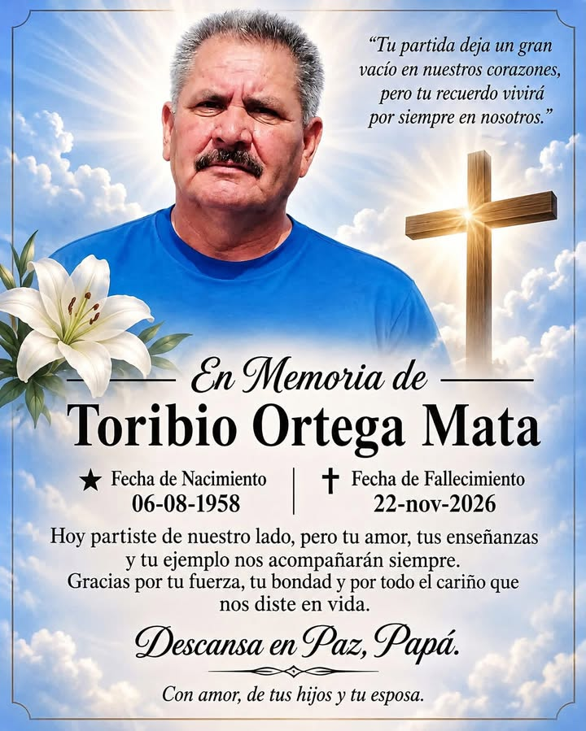
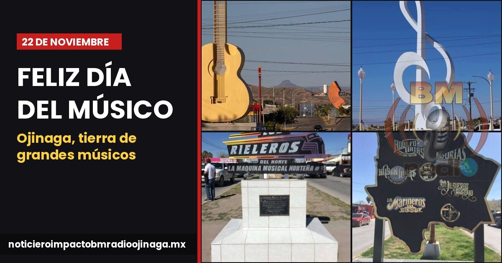
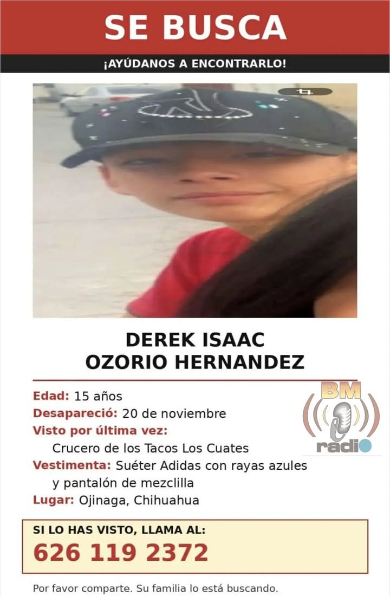
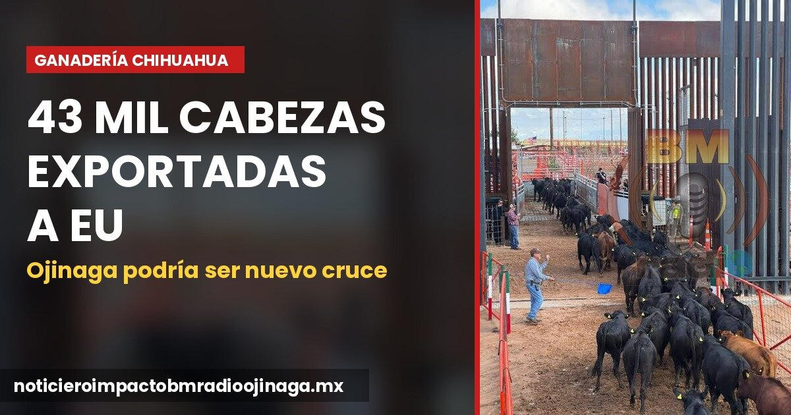
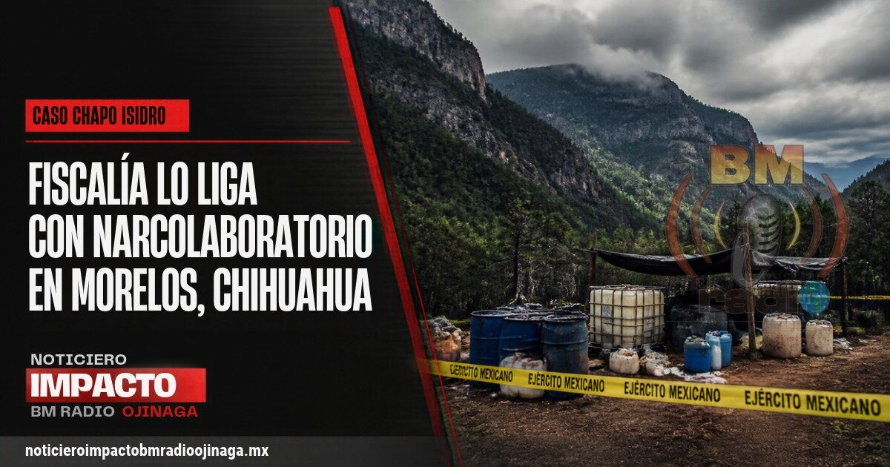
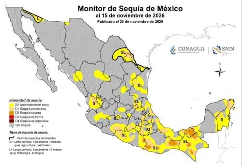
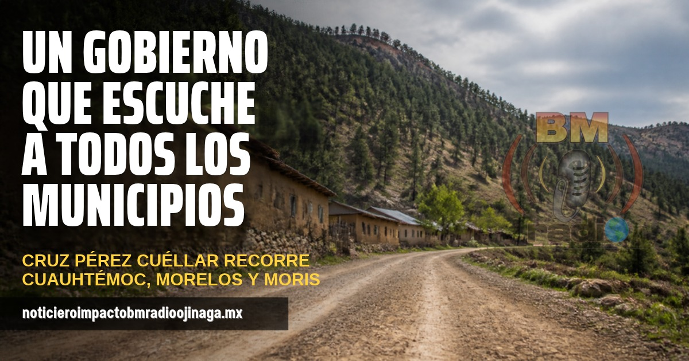

Estatal
Marco Bonilla, alcalde con licencia de Chihuahua capital, se registró este domingo ante la Comisión Estatal de Procesos Electorales del PAN para participar como precandidato a la gubernatura en 2027. El registro todavía debe ser validado por el partido. Las precampañas arrancan el 2 de diciembre y terminan el 10 de enero.
Policiaca
Cuatro personas murieron y alrededor de 40 resultaron lesionadas, 14 de ellas de gravedad, en la volcadura de un autobús de pasajeros la noche del domingo, a la altura del kilómetro 164 de la carretera Chihuahua–Ciudad Juárez. La unidad viajaba desde Zacatecas con destino a Ciudad Juárez. Los heridos fueron trasladados a distintos hospitales de Chihuahua capital. La Guardia Nacional y la Fiscalía del Estado investigan las causas.

Policiaca
Esta noche se reporta un accidente de un camión de pasajeros a la altura del kilómetro 130 de la carretera a Ciudad Juárez. Según reportes preliminares de medios locales, hay varias personas lesionadas. Cuerpos de emergencia se dirigen al lugar. La información está en desarrollo. Si viajas por esta carretera, toma precauciones.
Estatal
Cruz Pérez Cuéllar, coordinador estatal de la Defensa de la Transformación en Chihuahua, participó este domingo en la cabalgata por el 21 aniversario de la Unión Ganadera Regional División del Norte, en Chihuahua capital, con representantes de 48 asociaciones ganaderas. Pérez Cuéllar afirmó que es hora de acabar con el abandono de la ganadería en el estado. Señaló que solo alrededor del 1 por ciento del presupuesto estatal se destina al campo y se comprometió a impulsar una política que apoye tanto a pequeños como a grandes productores. Guadalupe Siqueiros, presidente de la Unión, dijo que desde 2016 no reciben apoyo del Gobierno del Estado. El tesorero, Benjamín García, propuso crear una Secretaría de Ganadería estatal con presupuesto propio.
Policiaca
Un nuevo hecho de inseguridad se registró la tarde de este domingo en la carretera Aldama–Ojinaga, donde sujetos armados despojaron con violencia a sus víctimas de un vehículo. De acuerdo con los reportes, el asalto ocurrió a la altura del entronque a Chorreras, lo que generó la movilización de elementos de la Policía Municipal de Aldama y de la Policía Estatal, quienes desplegaron un operativo en la zona. Otra vez la misma historia: los hechos vuelven a encender la preocupación entre quienes transitan por esta carretera, ante la repetición de robos y asaltos que ponen en riesgo a los automovilistas. Mientras tanto, ciudadanos cuestionan la falta de resultados y exigen mayor vigilancia, prevención y acciones concretas de las autoridades para garantizar la seguridad de quienes utilizan esta vía de comunicación. La carretera Aldama–Ojinaga no puede convertirse en un tramo donde viajar signifique exponerse a la delincuencia. La pregunta es: ¿hasta cuándo habrá una respuesta efectiva de las autoridades?

Local
Fotógrafo de profesión, cuya pasión por la fotografía le permitió capturar momentos, contar historias y dejar recuerdos imborrables. Su partida deja un vacío entre familiares, amigos y quienes tuvieron el gusto de conocerlo y compartir con él. Hoy recordamos su trayectoria, su trabajo y el legado de imágenes que permanecerán en la memoria de quienes lo conocieron. Expresamos nuestras más sinceras condolencias a sus familiares y seres queridos. Descanse en paz.

Local
Este 22 de noviembre, día de Santa Cecilia, reconocemos a los músicos de Ojinaga. Esta tierra ha dado al mundo grandes talentos de la música norteña, y sus monumentos a la guitarra, la clave de sol y sus agrupaciones son prueba del orgullo que sentimos por ellos. Felicidades a todos los músicos, a los que llevan años en los escenarios y a los que apenas empiezan, que con su talento llevan alegría a nuestras familias, fiestas y hogares, y ponen el nombre de Ojinaga en alto.

Policiaca
Familiares piden ayuda para localizar a Derek Isaac Ozorio Hernández, de 15 años, quien desapareció el 20 de noviembre en Ojinaga. Fue visto por última vez en el crucero de los Tacos Los Cuates. Vestía suéter Adidas con rayas azules y pantalón de mezclilla. Si lo ha visto o sabe algo, comuníquese al 626 119 2372, o repórtelo ante la Fiscalía o al 911. Su familia pide compartir esta publicación.

Estatal
De acuerdo con la Secretaría de Agricultura, Chihuahua ha enviado 43 mil 178 cabezas de ganado a Estados Unidos desde la reapertura de la frontera. Es el segundo estado que más exporta, después de Sonora, y en todo el país la cifra suma más de 108 mil cabezas. Por ahora el ganado de Chihuahua sale por las estaciones de San Jerónimo y Puerto Palomas. El secretario de Desarrollo Rural, Mauro Parada, informó que se contempla habilitar Ojinaga como cruce adicional. La meta del estado es cerrar el año con 100 mil cabezas exportadas.
Frontera
La Patrulla Fronteriza del Sector El Paso informó que el nuevo muro frente a Ciudad Juárez tiene sensores bajo tierra y cámaras con inteligencia artificial. Detectan cuando alguien coloca una escalera, trepa, excava o golpea el muro con herramientas, y avisan de inmediato a los agentes. De acuerdo con el agente José Navarro, un oficial puede ubicar una escalera en unos 30 segundos. El sistema se instala en el sector, que abarca unos 430 kilómetros entre Nuevo México, Texas y Chihuahua, con la meta de cubrirlo en dos años. El gobierno estadounidense destinó unos 4,500 millones de dólares a este tipo de muro y tecnología en la frontera. Según la Patrulla Fronteriza, los cruces irregulares en el sector bajaron 63% en el año fiscal 2026.

Policiaca
Gilberto Loya Chávez, encargado del despacho de la Fiscalía General del Estado, confirmó que Fausto Isidro Meza Flores, “El Chapo Isidro”, detenido el viernes en Guasave, Sinaloa, está vinculado con el laboratorio clandestino de drogas sintéticas que se descubrió en abril en la zona de El Pinal, municipio de Morelos. Aclaró que en Chihuahua no hay carpetas de investigación abiertas en su contra. Según reportes periodísticos, su grupo opera en el sur del estado, Sinaloa y Durango.

Estatal
Las lluvias registradas durante la primera mitad de noviembre permitieron reducir casi por completo las condiciones de sequía en el estado de Chihuahua, de acuerdo con el más reciente Monitor de Sequía de México, elaborado por la Comisión Nacional del Agua (Conagua). El reporte, con corte al 15 de noviembre de 2026, señala que el 99.2% del territorio chihuahuense se encuentra libre de cualquier nivel de sequía o condición anormalmente seca, un incremento de 6.1 puntos porcentuales durante la última quincena. Solamente el 0.8% de la superficie estatal permanece en condición anormalmente seca, y no se reportan áreas con sequía moderada, severa, extrema o excepcional; únicamente un municipio presenta condiciones anormalmente secas. Conagua atribuyó esta mejoría a las lluvias favorecidas por el paso de los frentes fríos número 4 al 6, la actividad de las corrientes en chorro polar y subtropical, así como otros sistemas atmosféricos que generaron precipitaciones por encima del promedio en el norte del país. También desaparecieron del mapa estatal las marcas que identificaban impactos de sequía de larga duración, de seis meses y de periodos superiores. A nivel nacional, el 72.9% del territorio mexicano se encontraba sin afectaciones por sequía al 15 de noviembre. Las precipitaciones representan un importante alivio para Chihuahua, particularmente para las actividades agrícolas y ganaderas.
Local
Expresamos nuestras felicitaciones al C.P. Leonel Galindo Carrasco, presidente municipal de Manuel Benavides, con motivo de su cumpleaños. Le deseamos mucha salud, bienestar y éxitos en esta nueva etapa de vida, así como fortaleza y sabiduría para continuar trabajando por el desarrollo de su municipio. Que disfrute este día en compañía de su familia y seres queridos.
Policiaca
Policías municipales de Chihuahua capital detuvieron este sábado a un chofer de camión urbano de 41 años, identificado como Aldo “Z. N.”. Según el reporte, manejaba en estado de ebriedad y llevaba un arma. Los agentes le cerraron el paso en 24 de Febrero y Silvestre Terrazas cuando intentó huir. Dentro de la unidad encontraron una pistola de postas y bebidas alcohólicas. Quedó a disposición del juez cívico.
Policiaca
La Fiscalía del Estado, a través de la Agencia Estatal de Investigación de la Zona Noroeste, hizo un operativo para buscar a cuatro personas y colocó sus fichas en lugares concurridos de Nuevo Casas Grandes. Se busca a Cristian Yahir Loya García, Ramiro Castillo Ruiz, Carlos Antonio Alarcón Rascón y Silvia Alejandra Aguilar Guerrero. Quien tenga información puede reportarla al 911 o, de forma anónima, al 089.
Nacional
Del 21 al 27 de noviembre, la gasolina Magna no tendrá estímulo fiscal y pagará completo el impuesto IEPS de 6.70 pesos por litro. La Premium sigue sin apoyo. El diésel baja de un estímulo del 100 % a uno del 89.16 % y ahora pagará unos 80 centavos de IEPS por litro. Esto no significa que el precio en la bomba suba en automático, porque también influyen otros costos, pero puede haber ajustes esta semana.

Estatal
Cruz Pérez Cuéllar, alcalde con licencia de Ciudad Juárez y coordinador estatal de la Defensa de la Transformación en Chihuahua, se reunió en Cuauhtémoc con su equipo territorial y con el Consejo Municipal. Luego visitó Morelos y Moris, en la sierra, donde dijo que Chihuahua necesita un gobierno que escuche a todos sus municipios. En Morelos, Pérez Cuéllar cuestionó cómo se reparte el presupuesto estatal, de unos 117 mil millones de pesos, y señaló que la gobernadora Maru Campos no ha visitado ese municipio. Dijo que seguirá con sus recorridos por el estado.
Policiaca
Este sábado por la mañana, entre las 7:30 y las 8:00 horas, una camioneta Toyota Hilux blanca con placas de Jalisco se salió del camino y volcó en el kilómetro 31 de la carretera a Ojinaga, entre El Placer de Guadalupe y Falomir, en el municipio de Aldama. Viajaban tres hombres de 29, 34 y 59 años; dos de ellos resultaron lesionados. Agentes de la Policía Municipal de Aldama y paramédicos de Cruz Roja los atendieron y los llevaron a recibir atención médica. Hasta el momento no se conocen las causas de la volcadura. Un día antes, el viernes por la tarde, otro choque entre dos camionetas en la carretera federal Ojinaga-Chihuahua, a la altura de El Ancón, dejó una persona lesionada, que fue trasladada al IMSS. Se pide a quienes viajen por esta vía manejar con precaución.
Local
Hoy 21 de noviembre está de cumpleaños Juan Domínguez, el saxofonista que en 1978 fundó en Ojinaga a Conjunto Primavera, el grupo que llevó el nombre de nuestra tierra a escenarios de México, Estados Unidos y Europa, donde incluso se presentó en el Vaticano. Con canciones como “Morir de amor” y “Ansia de amar”, que siguen sonando en cada rincón, y con premios Grammy Latino en su trayectoria, su música es parte de la vida de varias generaciones. Desde Ojinaga le enviamos un abrazo y nuestra más sincera felicitación, con el orgullo de saber que la historia de Conjunto Primavera comenzó aquí. Mira el video completo en Facebook.
Estatal
El Gobierno del Estado pidió un nuevo préstamo de mil millones de pesos a tres bancos, que deberá pagar en menos de un año, según medios locales. En octubre, el secretario de Hacienda estatal, José de Jesús Granillo, explicó que el dinero serviría para cerrar el año, porque al estado le llegaron menos recursos del Gobierno Federal. El pago está previsto para junio de 2027.